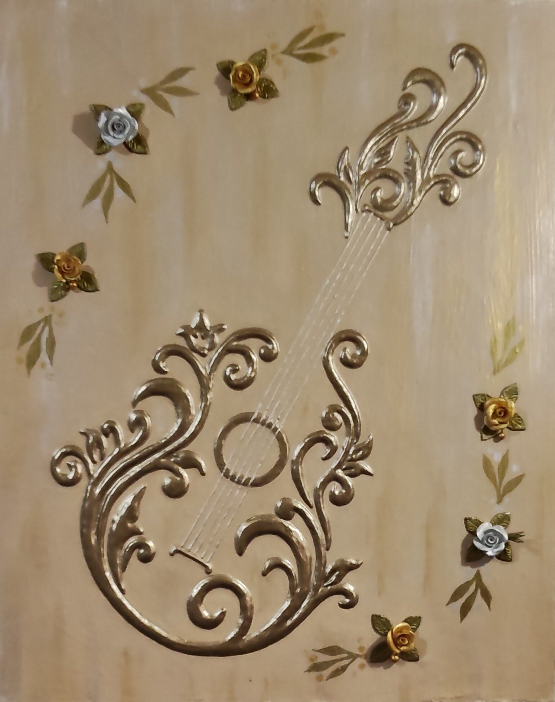

NICOLETA FILIP ART
GUITARRA
Composición en relieve inspirada en la guitarra, donde el volumen, la textura y el tratamiento de la superficie aportan presencia y carácter a la pieza.
Sobre la obra
GUITARRA presenta una interpretación ornamental de este instrumento musical, trabajada mediante elementos en relieve sobre una base de madera.
El volumen de la composición aporta profundidad y permite que la incidencia de la luz destaque las diferentes texturas y matices de la superficie.
Presentación artística
La obra combina relieve, textura y color para construir una composición de carácter decorativo y simbólico. La guitarra se convierte en el elemento central de una pieza donde la materia adquiere protagonismo.
Ficha técnica
- Año
- 2026
- Dimensiones
- 50 × 50 cm
- Soporte
- Madera
- Técnica
- Técnica mixta, con flores realizadas en alto relieve artesanal mediante escayola y yeso.
- Categoría
- Objetos y símbolos
Si deseas recibir información sobre esta obra, puedes solicitarla directamente.
SOLICITAR INFORMACIÓN →